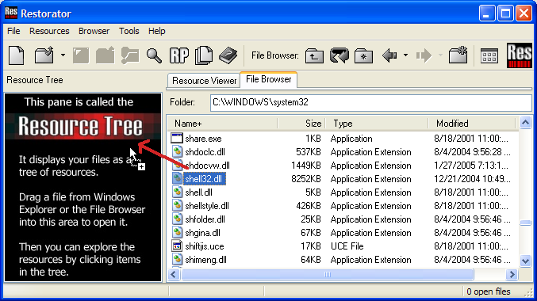
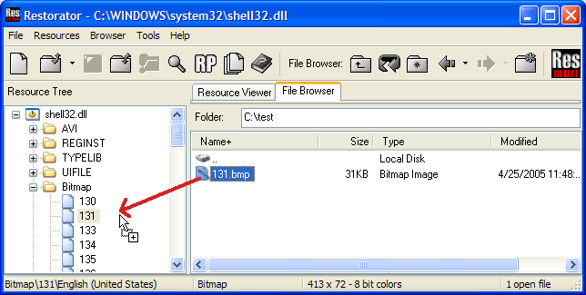
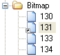

|
Help Overview Manual Tutorials FAQ Purchase Restorator Web |
Restorator
Replace Resource Tutorial
Tutorial: Replacing the about graphic of WinXP Notepad
This tutorial shows you how to have some fun: We will replace the About window of the calculator, Notepad and other Windows applications !
Please note that these apps are copyrighted programs: you should only modify them for your private use.

Here is another possibility how to open a file: Use Restorator's File Browser and type "C:\WINDOWS\SYSTEM32" in the Folder field.
You can also use the ".." folder in
the File Browser or the  button to go to a higher folder.
button to go to a higher folder.
Then drag the file shell32.dll with the mouse into the Resource Tree.
We found the location of the about image by using the Grab Resources tool (in the Tools menu) and then extracting all images of files in the systems32 folder.
Another handy tool is the Depends application included in Microsoft Visual C++ (it displays all the dll's used by an application).
 |
Now look at the Bitmap resources: number '131' contains the bitmap that is displayed in the about box of Notepad (it be a different number on your system, e.g. 149). |
Changing image resources is done in that fashion:
- Extract the resource to disk
- Modify it with another program
- Assign the modified file to the respective resource
- Save to create the custom application
1. Extract a resource to disk
| The simplest way
is to drag the resource with the mouse in the File Browser. In this
example create a folder C:\test where you save the about
picture 131.
This will create the file 131.bmp.
|
 |
Alternatively you could use the pop-up menu on the resource 131 or look in the "Resources" menu.
This process of saving a resource is called to extract a resource.
2. Modify the resource
For image editing, you can use the program Paint Shop Pro (or any other image editor like MS Paint). Open the image 131.bmp and put a little snake inside.
{kind=link}
|
The image size and color depth of the image is maintained to fit its location.
|
 |
3. Assign the modified file
Again, this is done simplest by dragging the new file on the resource item in the Resource Tree.

This process of replacing
a resource is called assignment. You can look
up in the context menu of resource 131 or in the menu "Resources"
for other ways of
assigning a file to a resource.
When you have successfully assigned a file, the resource icon is marked
with a small arrow.
Note that you can also use the Copy/Paste functions to exchange images with the image editor.
The undo
function can be found in the menu "Resources" or the pop-up menu;
it's called Detach.
4. Save shell32.dll to create the custom application
Use the menu or save button . Reboot.
Test it !
Finally, look at the about box of 'Notepad', 'Calculator' and other Windows applications. The snake will be waiting for you.

See the next tutorial on how to create a ResPatcher if you want to share the snake with your friends without sending the application or dll.
Copyright 1997-2007 by bome.com